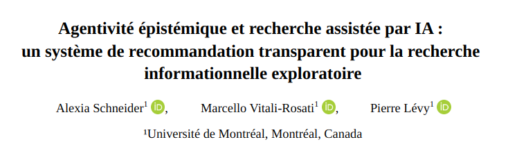
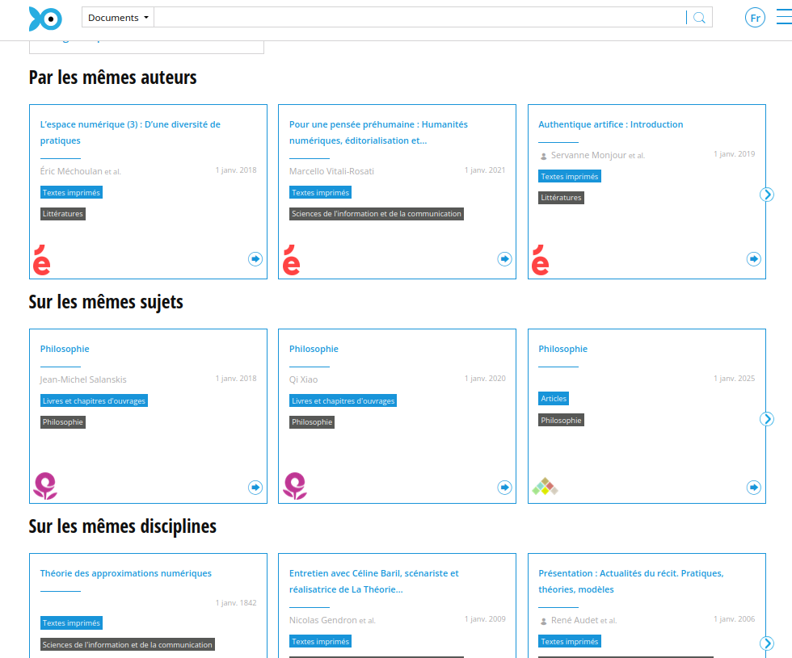
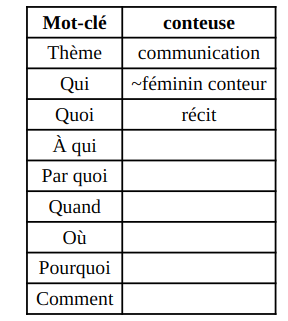
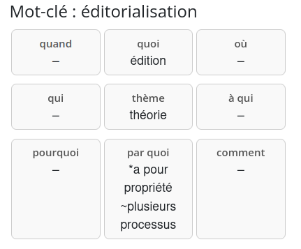
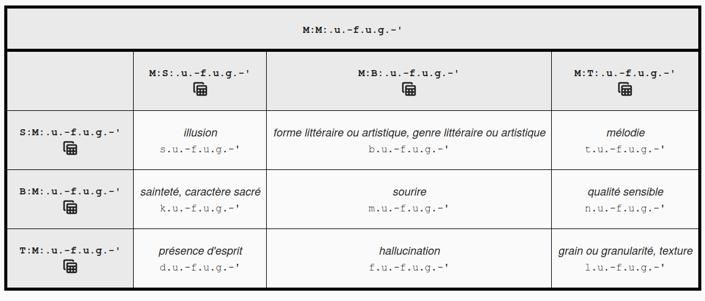
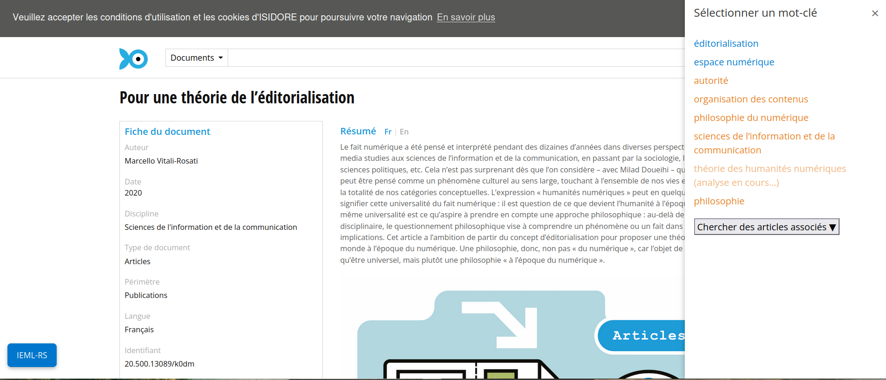
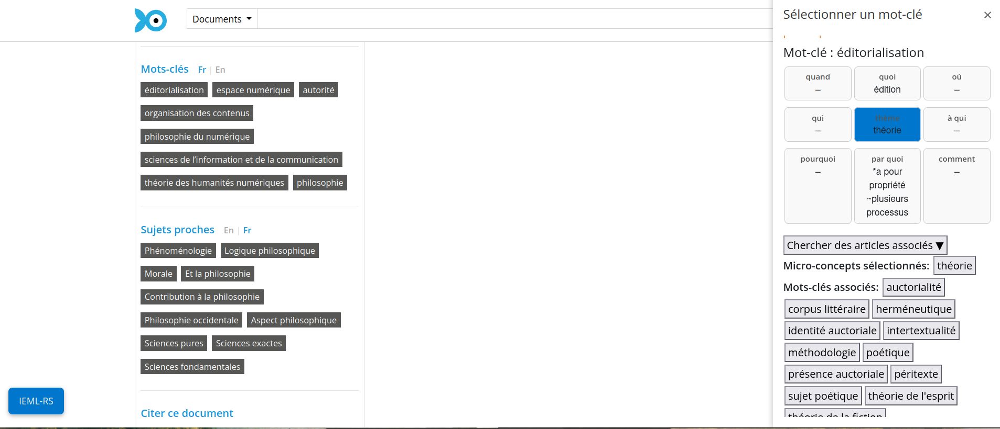
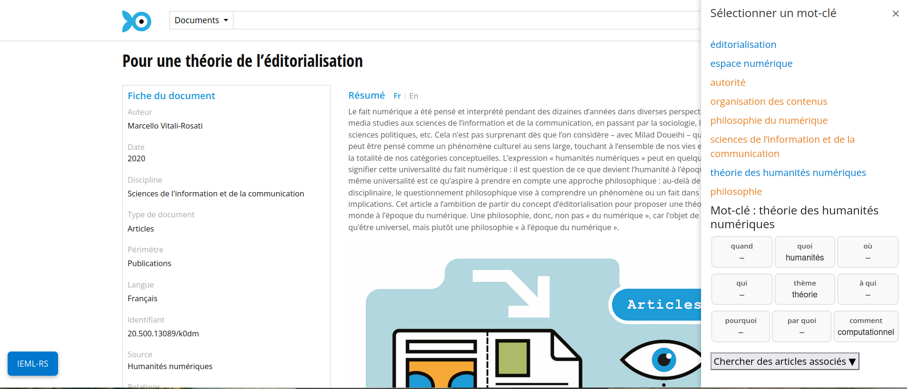
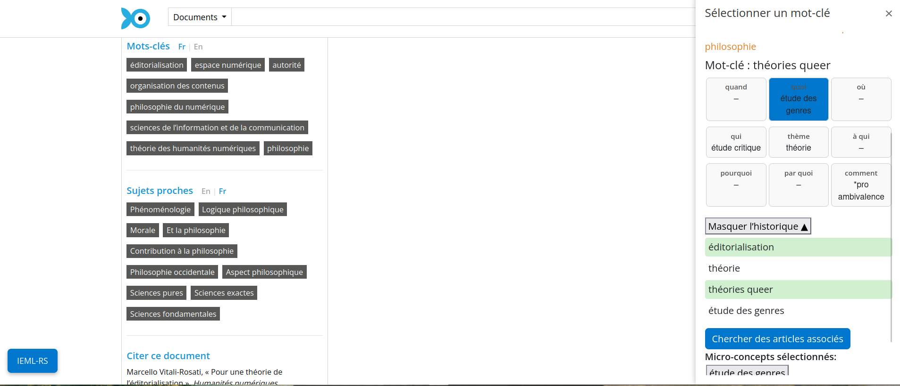
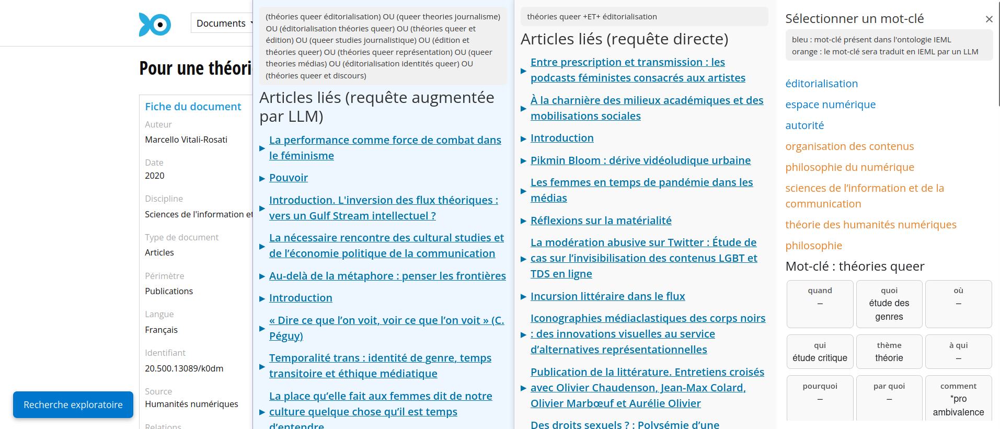

Humanistica - recherche documentaire assistée par IA et systèmes de recommandation
![]()
2026-04-14

Plan
- Introduction
- Problèmatique
- Etat de l’art (bref)
- Demonstration
- Evaluations des fonctionalités d’IEML-RS
- Conclusion
Introduction
Systèmes de recommandation ont changé de forme :
d’algorithmes qui extraient des “you might also like” en bordure de moteurs de recherche à des outils qui prennent en charge une requête en langue naturelle.

Screenshot de Isidore et des fonctions classiques d’articles suggérés

Screenshot de Undermind.ai. Prise en charge de la requête en langue naturelle, combinaison de toutes les étapes de la recherche (RI, ranking, synthèse)
Problématique
- concentration de citations (effet Matthew (Merton 1968)), bulles de filtre (Pariser 2011), biais de confirmation (Underwood 2014) : réduction de l’espace épistémique de la découverte (Nielsen and Andersen 2021; Varga 2022).
- opacité du ranking, des filtres, de la synthèse s’il y a lieu (Archambault and Rincón 2024; Patterson et al. 2025; Tay 2025)
Questions de recherche
Comment concevoir des systèmes explicables qui :
- Se trouvent au centre d’environnement qui favorisent l’exploration critique et permettent un engagement intellectuel avec l’algorithme ?
Quelques exemples de systèmes de recommandations alternatifs
Bridgerde Portenoy et al. (2022) expose les chercheur·se·s à des auteur·ice·s extérieur·e·s à leurs réseaux intellectuels habituels afin de favoriser le décloisonnement disciplinaire.VITALITYde Narechania et al. (2022) propose une approche de revue de littérature fondée sur la visualisationSTAKde Martin, Greenspan, and Quan-Haase (2017), s’est inspiré des affordances matérielles des bibliothèques physiques en tentant de recréer des environnements de navigation spatialisés.
IEML-RS : cadre théorique
Question initiale des travaux avec IEML : Qu’est-ce qu’une comparaison directe entre une ontologie symbolique et une recherche sémantique fondée sur les GML peut révéler sur leurs modèles épistémiques sous-jacents ?
découvrabilité (trouvabilité et sérendipité)
ancrage de la Performative Materiality des Humanités Numériques telle que définie par Drucker (2013) :
« Can we conceive of models of interface that are genuine instruments for research? That are not merely queries within pre-set data that search and sort according to an immutable agenda? How can we imagine an interface that allows content modeling, intellectual argument, rhetorical engagement? » — Drucker (2013)
IEML
Information Economy MetaLanguage (IEML) (Lévy 2023)


Dictionnaire de termes traduits en IEML https://ieml.intlekt.io/

Démonstration
Résumé des fonctionalités principales
- Exploration d’un champs sémantique élargit grâce à IEML à partir d’un mot-clé
- Génération automatique et correction (human-in-the-loop) des traductions manquantes
- Construction d’une requête envoyée à Isidore
- Comparaison des listes d’articles envoyé à partir de la requête simple et de la requête augmentée par LLM
Prompts
Translation prompt
Tu es un expert en sémantique. Tu dois décomposer sémantiquement le mot-clé "${keyword}" à partir des 9 valeurs suivantes :
'thème, qui, quoi, à qui, par quoi, quand, où, pourquoi, comment'
## Exemples
${examples}
## Mots du dictionnaire
Tu dois utiliser les mots ci-dessous pour définir le mot-clé "${keyword}":
${context}
Ta réponse prendra la forme d'un CSV à 9 colonnes, les entêtes de colonnes sont:
'thème, qui, quoi, à qui, par quoi, quand, où, pourquoi, comment'
Il n'est pas nécessaire de remplir tous les champs. Un champs peut rester vide entre deux virgules, comme dans les exemples.
Répond uniquement avec une ligne CSV finale, sans explication.Query augmentation prompt
Produit 10 variants de la requête booléenne suivante "${keywords}". Combine les requêtes proposées à l'aide de l'opérateur OU comme dans l'exemple : Mots-clés: "impact of climate change on biodiversity". Réponse: "
(climate change biodiversity impact) OU (effects of climate change on ecosystems) OU (biodiversity loss due to climate change) OU (climate change species extinction) OU (impact of global warming on wildlife) OU (effects of climate change on ecosystems and species diversity) OU (how climate change impacts wildlife and biodiversity) OR (climate change consequences for biological diversity) OU (relationship between climate change and loss of biodiversity) OU (climate change threats to flora and fauna diversity) OU (impact of climate change on biodiversity)
C'est à ton tour avec "${keywords}". Répond uniquement avec la requête sans donner d'explication.Évaluations
- Évaluation quantitative de la traduction produite par le LLM en IEML (RAG pour ancrage des traduction dans les mots du dictionnaire IEML)
- Évaluation quallitative (user study) de l’application dans son ensemble.
Evaluation de la traduction automatique en IEML
| word to translate | theme or root | who | what | to whom | by what means | when | where | why | how |
|---|---|---|---|---|---|---|---|---|---|
| espace numérique | technique numérique | - | espace | - | - | - | - | - | - |
| chanteur | jouer ou chanter une mélodie | personne | - | - | *par le moyen de voix | - | - | - |
Traduction attendue
| word translated | theme or root | who | what | to whom | by what means | when | where | why | how |
|---|---|---|---|---|---|---|---|---|---|
| espace numérique | espace | cyberespace | tous | par internet et les réseaux sociaux | - | virtuellement | monétiser et partager des informations | ||
| chanteur | musique | chanteur | interprétant une chanson | à un public | par sa voix | - | - | pour exprimer une émotion | en utilisant des métadonnées-chanson |
Exemples de traductions produites par rag-llama-fewshot
Récapitulatif de l’évaluation
Modèles (via l’API de Together AI) :
- Meta-Llama-3-70B-Instruct-Turbo
- Gemma-3n-E4B-it,
- GPT-oss-20B
| model/strategy | BLEU | Cosine | avg |
|---|---|---|---|
| baseline | 0.056 | 0.515 | 0.286 |
| llama_fewshot | 0.0222 | 0.555 | 0.289 |
| gemma_fewshot | 0.020 | 0.491 | 0.255 |
| openai_fewshot | 0.0167 | 0.498 | 0.257 |
| llama_zeroshot | 0.0129 | 0.514 | 0.263 |
| gemma_zeroshot | 0.0160 | 0.479 | 0.248 |
| openai_zeroshot | 0.016 | 0.493 | 0.254 |
Le contexte (soit les entrées du dictionnaire) améliore marginalement les performances.
NB: évaluation effectuée en novembre 2025
Evaluation qualitative de IEML-RS
6 utilisateur.ices (PhD en HN). Démonstration suivie d’une observation d’utilisation de 10 min puis entrevue de 15 min.
Critères :
- user-friendliness,
- utilité,
Fonctionalités:
- navigation (mots-clés et concepts),
- traducion vers IEML,
- comparaison des panels de listes d’articles.
Étude utilisateur.ice
- Facilité d’utilisation :
- confusion concernant l’intégration des concepts dans la requête
- traduction automatique et validation : obstacle initial (base de données limitée)
- Utilité :
- révèle de fortes disparités dans les pratiques de recherche des utilisateur.ices (recherche en réseau et contextuelle vs. recherche par mots-clés)
- force : panneaux comparatifs
- une traduction de qualité mixte encourage l’autonomie de l’utilisateur et un travail dialogique et collaboratif avec les LLM (Schneider 2026)
Conclusion et perspective
Exemple de conception d’environnement favorisant la sérendipité.
Des outils réflechis en cours dans les HN :
- Barista du projet Impresso (assistant à la construction de requête et non assistant de recherche),
- les développement en cours à Isidore pour un RAG limité à des scénarii d’usage précis,
- le Evidence-RAG du JDH (pour assister à l’évaluation des commentaires évaluteur pendant le peer review process).
Remerciements
Recherche financée par le CRSH à travers le projet de partenariat Revue3.0 ainsi qu’une bourse du Réseau Circé de mutualisation et de recherche pour les revues scientifiques.
Bibliographie
Screenshots

First step: from seed article, the panel opens and retrieves the article keywords

User can select a keyword already translated in IEML (in blue), displaying the grid containing concepts defining the keyword

If the keyword hasn’t been translated a LLM translation is suggested (from the IEML dictionnary) and user can modify it

After validation of the translation, the translation is added to the IEML database

User can build a query from selected concepts and keywords

The query returns 2 lists of articles, one from the keywords selected and one from a query augmentation of those keywords

Alexia Schneider - 2026